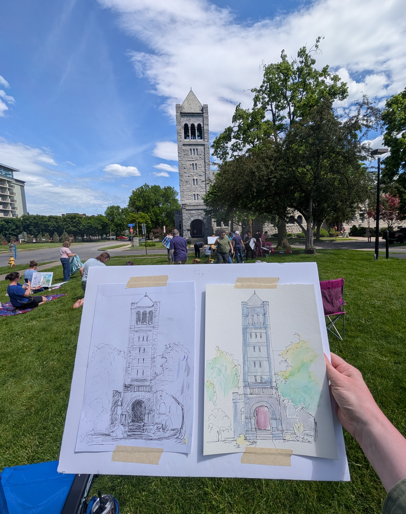

Featured painting

A little about me
I've been a hobby artist for as long as I can remember, but watercolor is newer for me. A couple of years ago I picked up a small watercolor set on a whim and started experimenting, and it's been my favorite way to paint ever since.
Most of what ends up on my paper comes from the world right outside my door.
- Birds
- Flowers
- My cats
- Nature scenes
A few from the sketchbook
Click or tap any painting for a closer look.